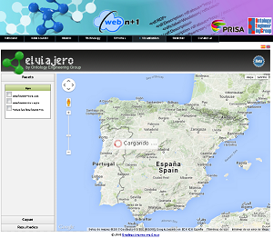
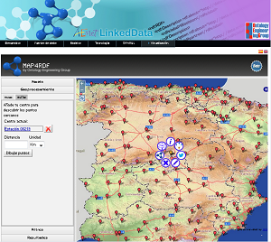
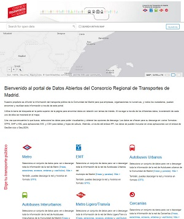
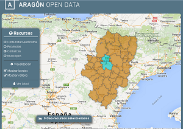

No longer maintained
In this web, you will find the major initiatives, websites and collaborations developed by the OEG but no longer maintained.
RTVE LinkedData
RTVE LinkedData is collaboration between RTVE and the OEG to developed a semantic searcher of television programs, as well as the publication of that information in a SPARQL endpoint.

El Viajero - El País
El Viajero. In this use case, the contents of the Prisa Group have been published in RDF (Resource Description Framework), according to the Linked Data principles, and modeling all the available provenance with the Open Provenance Model. Information published comes from "Suplemento El País", "Guías Aguilar", "Canal Viajar" and "Prisa Digital". It also includes the recommendations of the users, their images and blogs. There's a visualizer available.

AemetLinked Data(.es)
AemetLinked Data(.es) was an open initiative of the Ontology Engineering Group (OEG) whose aim was to enrich the Web of Data with Spanish geospatial data. This initiative started off by publishing diverse information sources belonging to the Spanish Meteorological Agency.

Bicycle Sharing Systems
Inside the INNPRONTA project CIUDAD 2020 there is a study case related to bicycle sharing systems in different cities. Tthe goal of this case study is to publish up-to-date linked data about the availability of bikes and free slots in the stations of the different systems, and links to related resources like travel guides and points of interest, e.g. museums, restaurants.Further information.
Open Data CRTM
Open Data CRTM (Regional Consortium of Transportation for Madrid) is an initiative of CRTM to promote the reuse of the information published in its website by citizens, companies and other institutions. OEG is supporting the publication of that information in a SPARQL endpoint as well as the development of a vocabulary for CRTM data.Further information.

Buscador-visualizador territorial de información
This is a project developed in the Jacathon Aragon Open Data, awarded with "Jacathon Aragón Open Data" prize. The aim of this visualizer is to represent of all resources from catalog of Aragón: "Comunidad Autónoma", "Provincia", "Comarca" and "Municipios", so the final user can view class inheritance, data of geo-spatial resources or browse other links to check, add or learn more information about resource. Further information.
